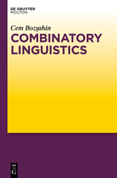

Updates and new uploads of research output are in Academia.edu.
Old manuscripts are at my METU research page.
 Bozsahin, Cem (2012). Combinatory Linguistics. Berlin/Boston: Mouton de Gruyter.
Book
Cognitive Science Department
Informatics Institute
Middle East Technical University
06800 Ankara, Turkey